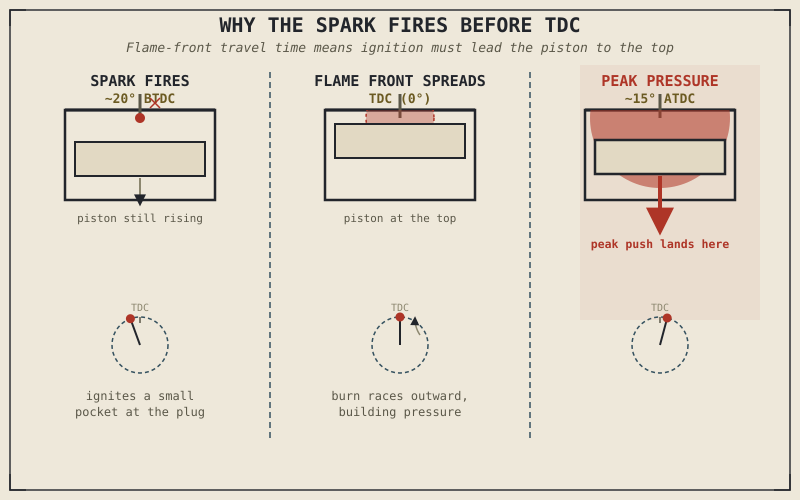

The spark plug fires before the piston reaches the top of its stroke — not at the top, not after it, but measurably earlier, on every single power stroke, at every engine speed the bike will ever run at. Ask most riders why, and the honest answer is usually a shrug. It sounds like it should be a rounding error. It isn't. Get that timing wrong by even a few degrees of crank rotation, in either direction, and an engine can lose meaningful power, run hotter than it should, or in the worst case, damage itself from the inside. This chapter is about why that small number of degrees matters as much as it does.
Chapter 2.1 warned against picturing combustion as a violent, instantaneous explosion, and promised this chapter would explain exactly what it is instead. Chapter 2.2 described the power stroke as "a spark ignites the mixture," which is accurate but leaves out the entire engineering problem hiding inside that sentence. This chapter opens that sentence up.
Combustion Is a Flame Front, Not an Explosion
When the spark plug fires, it doesn't ignite the entire compressed air-fuel mixture in the cylinder simultaneously. It ignites a small pocket of mixture right at the tip of the spark plug's electrode, and from there, a flame front spreads outward through the rest of the chamber, consuming the mixture progressively as it travels — a process that takes a genuinely measurable amount of time, even though it happens in a fraction of a second. This is the mechanical reality behind Chapter 2.1's point about control rather than violence: a well-designed combustion event is a fast, orderly burn racing across the chamber, not an instantaneous detonation of everything at once.
That travel time is the entire reason ignition timing exists as a problem to solve at all. The goal of combustion isn't just "burn the mixture" — it's to have the flame front consume enough of the mixture, and build enough pressure, so that the peak push against the piston lands at the ideal moment in the crank's rotation to do useful work. Since the flame takes time to spread, the spark has to fire before the piston reaches TDC, so that the flame front has finished most of its work and pressure is building strongly just as the piston starts its descent on the power stroke.
Why the Spark Fires Early: Timing Advance
The number of degrees of crankshaft rotation before TDC that the spark fires is called ignition timing, or spark advance, and it isn't a fixed number even on a single engine — it changes with RPM, and modern engines manage it electronically through what's usually called an ignition map. At low RPM, the piston is moving relatively slowly through each degree of crank rotation, giving the flame front comparatively more real time to spread before the piston needs that pressure, so less advance is needed. At high RPM, the piston covers the same number of crank degrees in far less real time, but the flame front doesn't get any faster just because the engine is spinning quicker — so the spark needs to fire earlier, with more advance, to finish burning the mixture by the same critical point in the piston's travel.
Get this wrong in either direction and the engine pays for it. Too little advance, and peak cylinder pressure arrives after the piston has already started moving away from TDC, wasting much of that pressure pushing against a piston that's no longer well-positioned to convert it into rotation efficiently — the engine feels flat and produces less power than it should. Too much advance, and the mixture starts building serious pressure before the piston has even finished its upward compression stroke, fighting the piston's own motion and stressing the whole assembly. Getting this balance right, across the entire rev range, is one of the primary jobs of the ignition system, and it's a large part of why simply feeding more fuel or air into an engine, without also managing this timing correctly, doesn't reliably produce more usable power.
Ignition timing isn't a minor calibration detail. It's the mechanism that decides whether the flame front's work actually lands where the piston can use it — get it wrong, and combustion happens, but mostly to no purpose.

A cylinder shown at three points around TDC — spark firing before TDC, flame front spreading through the chamber, and peak pressure landing just after TDC as the piston begins its descent.
When Combustion Goes Wrong: Knock
Occasionally, conditions inside the cylinder cause a pocket of unburned mixture — usually the portion furthest from the spark plug, called the end-gas — to ignite on its own from heat and pressure alone, before the advancing flame front ever reaches it. This is knock, sometimes called detonation or pinging, and it's genuinely damaging: instead of one smooth, controlled flame front sweeping through the chamber, you get two combustion events colliding, producing a sharp pressure spike and an audible knocking sound that gives the phenomenon its name. Sustained knock can damage pistons, valves, and bearings, sometimes within minutes.
Knock becomes more likely with more ignition advance, higher compression ratios, leaner air-fuel mixtures, and higher intake air temperatures — several of which are exactly the conditions that also tend to produce more power, which is why avoiding knock is a genuine limiting factor on how aggressively an engine can be tuned, not an incidental concern. This is also where fuel octane rating actually matters: octane measures a fuel's resistance to igniting under heat and pressure alone, which is precisely the end-gas self-ignition that causes knock. Higher-octane fuel doesn't contain more energy or inherently make more power — it simply tolerates more compression and more ignition advance before knock sets in, which is why it only matters for engines actually tuned aggressively enough to need that extra margin.
A Common Misconception, Cleared Up Early
It's a common and understandable assumption that premium, higher-octane fuel is simply better fuel, and will make any engine run better or produce more power. For the majority of motorcycles, designed with compression ratios and ignition maps that don't approach the knock threshold on standard fuel, this isn't true — the engine's own ignition system is tuned around ordinary fuel, and higher octane fuel that never gets close to knocking provides no measurable benefit, because the fuel's octane rating and the engine's tuning were never in tension to begin with.
Higher octane fuel earns its keep specifically in engines with high compression ratios or aggressive ignition maps that are actually operating close to the knock threshold — exactly the kind of engine Chapter 2.9's discussion of compression ratio trade-offs will describe. Buying premium fuel for an engine that doesn't need it isn't harmful, but it isn't the upgrade it's often assumed to be either. This is a small, specific instance of the larger habit Chapter 1.6 asked you to build: a spec — in this case, octane rating — only means something in relation to what the rest of the machine actually requires.
Where This Leads
This chapter has described what happens to the mixture once it ignites — the flame front spreads, pressure builds, and under the right timing, that pressure lands squarely on the piston at the ideal moment. What hasn't been described yet is what happens to that pressure mechanically: how the piston's straight-line push actually becomes the crankshaft's rotation. Chapter 2.5 picks up exactly there, with the bottom end — the crankshaft, connecting rods, and pistons that turn combustion's pressure into the motion Chapter 2.1 named as the engine's entire purpose.
Key Concepts to Remember
- Combustion is a flame front spreading progressively from the spark plug through the chamber, not a simultaneous explosion of the entire mixture at once.
- The spark fires before TDC — ignition timing, or spark advance — so the flame front has time to build peak pressure just as the piston begins its power-stroke descent.
- Ignition timing must increase with RPM, since the piston covers the same crank rotation in less real time as engine speed rises, while the flame front's spread rate stays essentially constant.
- Knock occurs when unburned end-gas self-ignites from heat and pressure before the flame front reaches it, producing a damaging pressure spike rather than a smooth burn.
- Octane rating measures a fuel's resistance to knock, not its energy content or inherent quality — higher octane only benefits engines actually tuned aggressively enough to approach the knock threshold.
Cross-References
| ← Ch. 2.1 | First argued that combustion should be understood as controlled, not violent; this chapter supplies the flame-front mechanics behind that claim. |
| ← Ch. 2.2 | Described the power stroke as "a spark ignites the mixture"; this chapter unpacks exactly what that sentence involves. |
| ← Ch. 1.6 | Established that a specification only matters in relation to the rest of the system — applied here directly to octane rating and compression ratio. |
| → Ch. 2.5 | Picks up the mechanical side of the power stroke: how the piston's push, once delivered, becomes the crankshaft's rotation. |
| → Ch. 2.9 | Compression ratio trade-offs in full, including its direct relationship to the knock threshold introduced here. |